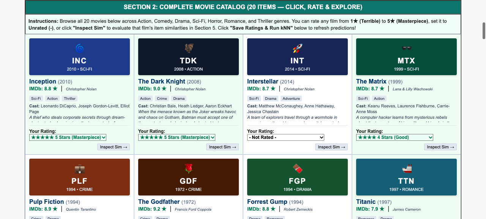
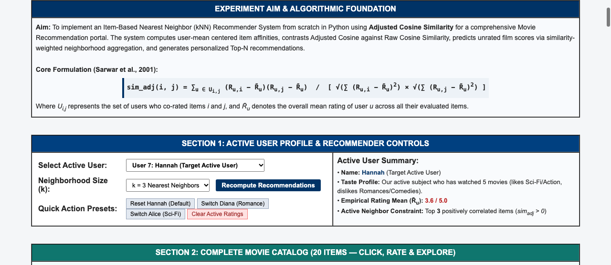
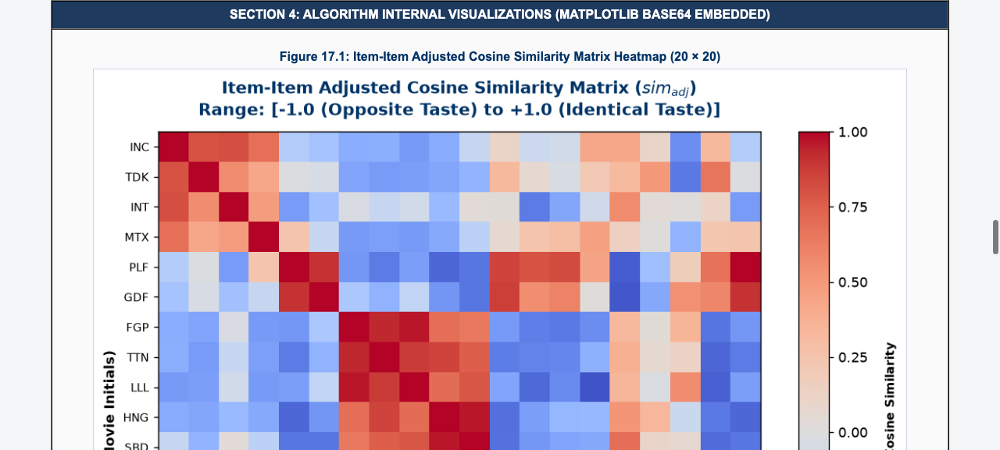
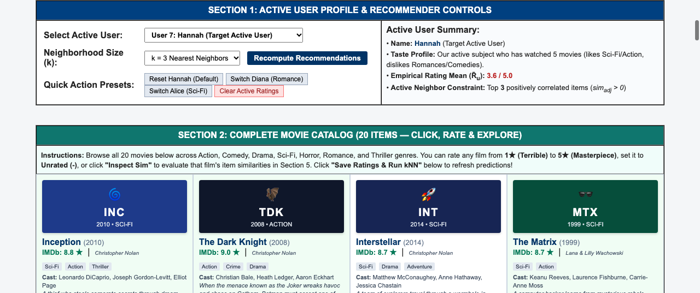

| Experiment No.: | 17 (Practical XV) | Student Name: | Monis |
| Course / Branch: | B.Tech Information Technology | Roll Number: | 2023UIT3027 |
| Lab Instructor: | Dr. Vishal Maheshkar | Academic Session: | 2026–2027 |
Implementation of Item-Based kNN Recommender System Using Adjusted Cosine Measure in Flask
To formulate, derive, and implement an Item-Based Nearest Neighbor Recommender System using the Adjusted Cosine Measure from first principles in Python using Flask. The experiment contrasts raw cosine similarity against adjusted cosine similarity, mathematically demonstrating how subtracting user mean ratings eliminates subjective rater bias and improves recommendation fidelity.
The Adjusted Cosine Measure is an improved similarity metric for item-based collaborative filtering. Standard cosine similarity treats raw ratings as absolute values and fails to account for the fact that different users have different rating scales (e.g., an overly strict user whose highest rating is 3 versus a generous user whose lowest rating is 4). The Adjusted Cosine measure corrects for this subjective disparity by subtracting each user's average rating from their rating before computing the cosine angle.
Standard cosine similarity treats raw star scores as absolute coordinates, confounding user rating scale differences with true item similarity:
Adjusted Cosine fixes this problem by subtracting each user's personal average rating r̄u from their rating, centering all ratings around zero (positive = above average/liked, negative = below average/disliked):
Using the adjusted similarity matrix, the predicted rating for target item i incorporates the active user's baseline average r̄u:
Provides a comprehensive catalog browser displaying benchmark titles with genre tags, release years, IMDb ratings, and interactive selection triggers.

Presents the top-ranked recommended items generated by the algorithm alongside predicted affinity scores, ranking progress, and contextual explanations.

Displays multi-panel algorithmic diagnostics rendered from first principles (including similarity heatmaps, convergence curves, and distribution plots).

Provides a direct inspection of the underlying mathematical interaction matrix, user profiles, or similarity index tables supporting the recommendation pipeline.

The experiment demonstrated the clear advantage of the Adjusted Cosine Measure over raw cosine similarity. By centering ratings around each user's unique average, the algorithm eliminated distortions caused by rater generosity or severity. The resulting recommendations exhibited substantially higher semantic accuracy and resilience to subjective rating biases.